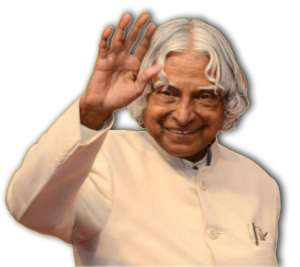

Born : 15 October 1931
Death : 27 July 2015

"To succeed in your mission, you must have single-minded devotion to your goal."
sepecification :
Avul Pakir Jainulabdeen Abdul Kalam (/ˈɑːbdəl kəˈlɑːm/ (listen); 15 October 1931 – 27 July 2015) was an Indian aerospace scientist who served as the 11th President of India from 2002 to 2007. He was born and raised in Rameswaram, Tamil Nadu and studied physics and aerospace engineering. He spent the next four decades as a scientist and science administrator, mainly at the Defence Research and Development Organisation (DRDO) and Indian Space Research Organisation (ISRO) and was intimately involved in India's civilian space programme and military missile development efforts.[1] He thus came to be known as the 'Missile Man of India' for his work on the development of ballistic missile and launch vehicle technology.[2][3][4] He also played a pivotal organisational, technical, and political role in India's Pokhran-II nuclear tests in 1998, the first since the original nuclear test by India in 1974.[5]
President :
Kalam served as the 11th president of India, succeeding K. R. Narayanan. He won the 2002 presidential election with an electoral vote of 922,884, surpassing the 107,366 votes won by Lakshmi Sahgal. His term lasted from 25 July 2002, to 25 July 2007.[38]
On 10 June 2002, the National Democratic Alliance (NDA) which was in power at the time, expressed that they would nominate Kalam for the post of President,[39][40] and both the Samajwadi Party and the Nationalist Congress Party backed his candidacy.[41][42] After the Samajwadi Party announced its support for Kalam, Narayanan chose not to seek a second term in office, leaving the field clear.[43] Kalam said of the announcement of his candidature
Death :
Kalam served as the 11th president of India, succeeding K. R. Narayanan. He won the 2002 presidential election with an electoral vote of 922,884, surpassing the 107,366 votes won by Lakshmi Sahgal. His term lasted from 25 July 2002, to 25 July 2007.[38]
On 10 June 2002, the National Democratic Alliance (NDA) which was in power at the time, expressed that they would nominate Kalam for the post of President,[39][40] and both the Samajwadi Party and the Nationalist Congress Party backed his candidacy.[41][42] After the Samajwadi Party announced its support for Kalam, Narayanan chose not to seek a second term in office, leaving the field clear.[43] Kalam said of the announcement of his candidature